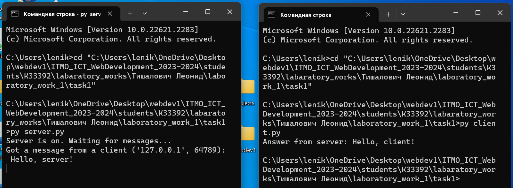
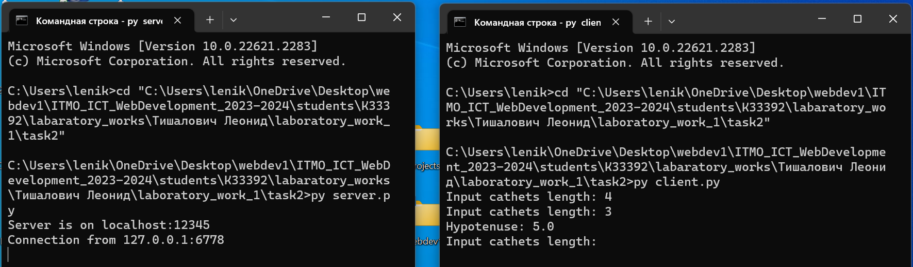
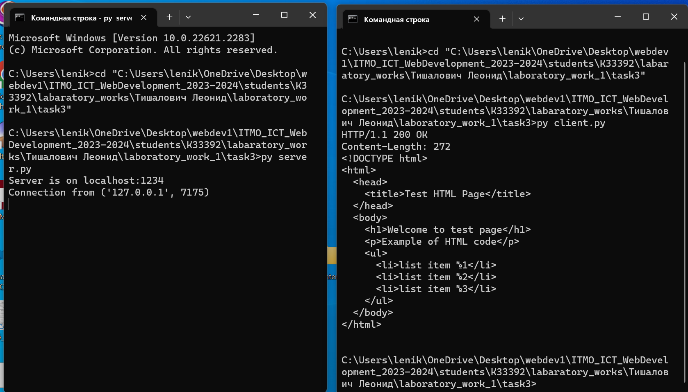
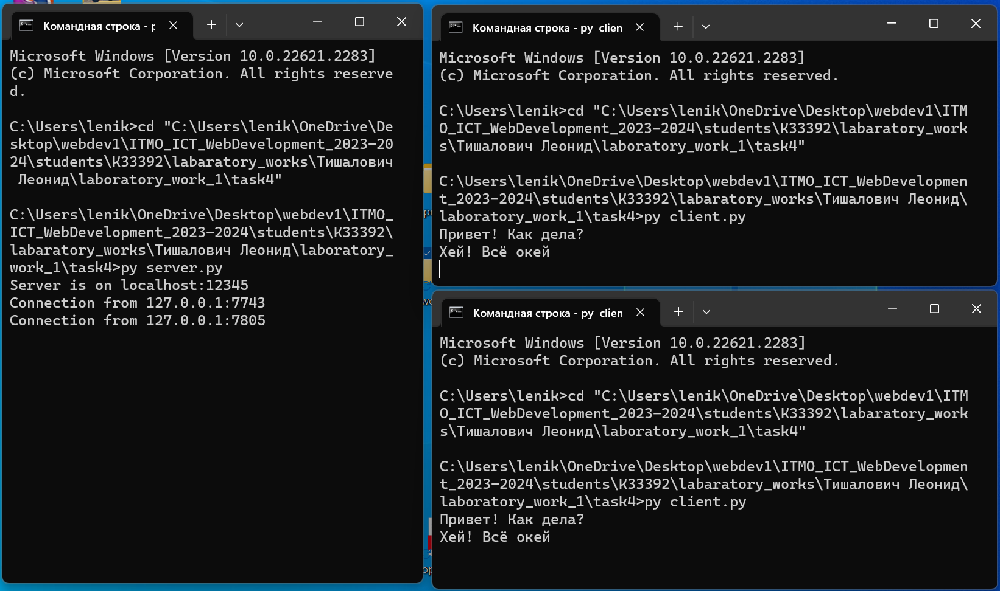
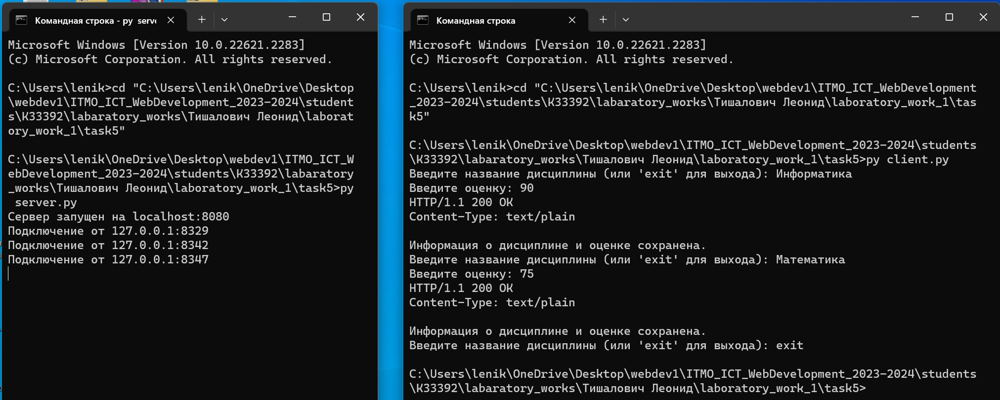
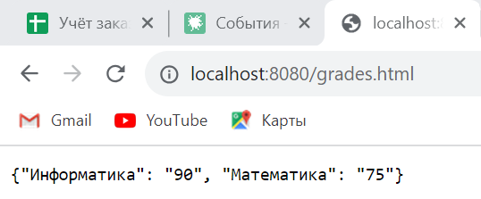

Лабораторная работа №1
Цель: овладеть практическими навыками и умениями реализации web-серверов и использования сокетов.
Задание 1
Реализовать клиентскую и серверную часть приложения. Клиент отсылает серверу сообщение «Hello, server». Сообщение должно отразиться на стороне сервера. Сервер в ответ отсылает клиенту сообщение «Hello, client». Сообщение должно отобразиться у клиента.
Обязательно использовать библиотеку socket
Реализовать с помощью протокола UDP
Ход выполнения работы
Код server.py
import socket
server_socket = socket.socket(socket.AF_INET, socket.SOCK_DGRAM)
server_address = ('localhost', 1234)
server_socket.bind(server_address)
print('Server is on. Waiting for messages...')
while True:
message, client_address = server_socket.recvfrom(1024)
print(
f'Got a message from a client {client_address}: {message.decode()}')
response = 'Hello, client!'
server_socket.sendto(response.encode(), client_address)
Код client.py
import socket
client_socket = socket.socket(socket.AF_INET, socket.SOCK_DGRAM)
server_address = ('localhost', 1234)
message = 'Hello, server!'
client_socket.sendto(message.encode(), server_address)
response, _ = client_socket.recvfrom(1024)
print(f'Answer from server: {response.decode()}')
client_socket.close()
Результат

Задание 2
Реализовать клиентскую и серверную часть приложения. Клиент запрашивает у сервера выполнение математической операции, параметры, которые вводятся с клавиатуры. Сервер обрабатывает полученные данные и возвращает результат клиенту. Вариант: Теорема Пифагора
Обязательно использовать библиотеку socket
Реализовать с помощью протокола TCP
Ход выполнения работы
Код server.py
import socket
server_address = ('localhost', 12345)
server_socket = socket.socket(socket.AF_INET, socket.SOCK_STREAM)
server_socket.bind(server_address)
server_socket.listen(1)
print("Server is on {}:{}".format(server_address[0], server_address[1]))
def calculate_hypotenuse(a, b):
return (a ** 2 + b ** 2) ** 0.5
while True:
client_socket, client_address = server_socket.accept()
print("Connection from {}:{}".format(client_address[0], client_address[1]))
try:
a = float(client_socket.recv(1024).decode('utf-8'))
b = float(client_socket.recv(1024).decode('utf-8'))
result = calculate_hypotenuse(a, b)
client_socket.send(str(result).encode('utf-8'))
except ValueError:
client_socket.send("Error: wrong data.".encode('utf-8'))
except:
client_socket.send(
"Error: couldn't handle response.".encode('utf-8'))
client_socket.close()
Код client.py
import socket
server_address = ('localhost', 12345)
client_socket = socket.socket(socket.AF_INET, socket.SOCK_STREAM)
client_socket.connect(server_address)
while True:
try:
a = float(input("Input cathets length: "))
b = float(input("Input cathets length: "))
client_socket.send(str(a).encode('utf-8'))
client_socket.send(str(b).encode('utf-8'))
result = client_socket.recv(1024).decode('utf-8')
print("Hypotenuse: {}".format(result))
except ValueError:
print("Error: input number.")
except Exception as e:
print("Error: {}".format(e))
break
client_socket.close()
Результат

Задание 3
Реализовать серверную часть приложения. Клиент подключается к серверу. В ответ клиент получает http-сообщение, содержащее html-страницу, которую сервер подгружает из файла index.html.
Обязательно использовать библиотеку socket
Ход выполнения работы
Код server.py
import socket
server_address = ('localhost', 1234)
server_socket = socket.socket(socket.AF_INET, socket.SOCK_STREAM)
server_socket.bind(server_address)
server_socket.listen(100)
print(f"Server is on {server_address[0]}:{server_address[1]}")
while True:
client_socket, client_address = server_socket.accept()
print(f"Connection from {client_address}")
with open('index.html', 'r', encoding='utf-8') as file:
html_content = file.read()
response = f"HTTP/1.1 200 OK\r\nContent-Length: {len(html_content)}\r\n\r\n{html_content}"
client_socket.sendall(response.encode('utf-8'))
client_socket.close()
Код client.py
import socket
server_address = ('localhost', 1234)
client_socket = socket.socket(socket.AF_INET, socket.SOCK_STREAM)
client_socket.connect(server_address)
http_request = "GET / HTTP/1.1\r\nHost: localhost\r\n\r\n"
client_socket.sendall(http_request.encode('utf-8'))
response = b""
while True:
try:
data = client_socket.recv(1024)
except:
break
response += data
client_socket.close()
http_response = response.decode('utf-8')
header, html_content = http_response.split('\r\n\r\n', 1)
print(header)
print(html_content)
Код index.html
<!DOCTYPE html>
<html>
<head>
<title>Test HTML Page</title>
</head>
<body>
<h1>Welcome to test page</h1>
<p>Example of HTML code</p>
<ul>
<li>list item №1</li>
<li>list item №2</li>
<li>list item №3</li>
</ul>
</body>
</html>
Результат

Задание 4
Реализовать двухпользовательский или многопользовательский чат. Реализация многопользовательского часа позволяет получить максимальное количество баллов.
Обязательно использовать библиотеку threading
Ход выполнения работы
Код server.py
import socket
import threading
# Указываем адрес сервера и порт
server_address = ('localhost', 12345)
# Создаем серверный соксет
server_socket = socket.socket(socket.AF_INET, socket.SOCK_STREAM)
# Привязываем соксет к адресу сервера
server_socket.bind(server_address)
# Начинаем слушать подключения
server_socket.listen(5)
clients = []
def handle_client(client_socket):
while True:
try:
# Получаем сообщение от клиента и декодируем его
message = client_socket.recv(1024).decode('utf-8')
if not message:
break
# Отправляем сообщение всем клиентам, кроме отправителя
for client in clients:
if client != client_socket:
client.send(message.encode('utf-8'))
except:
break
# Удаляем клиента из списка и закрываем соединение
clients.remove(client_socket)
client_socket.close()
print("Server is on {}:{}".format(server_address[0], server_address[1]))
while True:
# Принимаем входящее подключение
client_socket, client_address = server_socket.accept()
print("Connection from {}:{}".format(client_address[0], client_address[1]))
# Добавляем клиента в список
clients.append(client_socket)
# Создаем и запускаем поток для обработки клиента
client_thread = threading.Thread(
target=handle_client, args=(client_socket,))
client_thread.start()
Код client.py
import socket
import threading
# Указываем адрес сервера и порт
server_address = ('localhost', 12345)
# Создаем клиентский соксет
client_socket = socket.socket(socket.AF_INET, socket.SOCK_STREAM)
# Устанавливаем соединение с сервером
client_socket.connect(server_address)
# Функция для приема сообщений от сервера
def receive_messages():
while True:
try:
message = client_socket.recv(1024).decode('utf-8')
print(message)
except:
break
# Создаем поток для приема сообщений
receive_thread = threading.Thread(target=receive_messages)
# Запускаем поток
receive_thread.start()
# Основной цикл для отправки сообщений
while True:
# Получаем сообщение от пользователя
message = input()
# Кодируем сообщение в байты с использованием кодировки UTF-8 и отправляем на сервер
client_socket.send(message.encode('utf-8'))
Результат

Задание 5
Необходимо написать простой web-сервер для обработки GET и POST http запросов средствами Python и библиотеки socket.
Задание: сделать сервер, который может: ● Принять и записать информацию о дисциплине и оценке по дисциплине. ● Отдать информацию обо всех оценах по дсициплине в виде html-страницы.
Ход выполнения работы
Код server.py
import socket
import re
import json
server_socket = socket.socket(socket.AF_INET, socket.SOCK_STREAM)
server_address = ('localhost', 8080)
server_socket.bind(server_address)
server_socket.listen(1)
print("Сервер запущен на {}:{}".format(server_address[0], server_address[1]))
grades = {}
def handle_request(request):
global grades
response = ""
# Если запрос начинается с "GET", возвращаем список оценок в формате JSON
if request.startswith("GET"):
response += "HTTP/1.1 200 OK\r\nContent-Type: application/json; charset=utf-8\r\n\r\n"
response += json.dumps(grades, ensure_ascii=False)
# Если запрос начинается с "POST", извлекаем данные о дисциплине и оценке из запроса
elif request.startswith("POST"):
match = re.search(r"discipline=(\w+)&grade=(\d+)", request)
if match:
discipline = match.group(1)
grade = match.group(2)
grades[discipline] = grade
# Возвращаем успешный ответ и сообщение о сохранении данных
response += "HTTP/1.1 200 OK\r\nContent-Type: text/plain\r\n\r\n"
response += "Информация о дисциплине и оценке сохранена."
else:
# Если данные в запросе некорректны, возвращаем ошибку
response += "HTTP/1.1 400 Bad Request\r\nContent-Type: text/plain\r\n\r\n"
response += "Ошибка: Некорректные данные в POST запросе."
return response
while True:
# Принимаем входящее подключение и получаем соксет клиента и его адрес
client_socket, client_address = server_socket.accept()
print("Подключение от {}:{}".format(client_address[0], client_address[1]))
# Получаем запрос от клиента и декодируем его
request = client_socket.recv(1024).decode('utf-8')
# Обрабатываем запрос и получаем ответ
response = handle_request(request)
client_socket.send(response.encode('utf-8'))
client_socket.close()
Код client.py
import socket
# Указываем адрес сервера и порт
server_address = ('localhost', 8080)
while True:
try:
# Создаем клиентский соксет
client_socket = socket.socket(socket.AF_INET, socket.SOCK_STREAM)
# Устанавливаем соединение с сервером
client_socket.connect(server_address)
# Запрашиваем у пользователя название дисциплины
discipline = input(
"Введите название дисциплины (или 'exit' для выхода): ")
# Если пользователь ввел 'exit', выходим из цикла
if discipline.lower() == 'exit':
break
# Запрашиваем оценку у пользователя
grade = input("Введите оценку: ")
# Формируем POST-запрос для отправки на сервер
post_request = "POST / HTTP/1.1\r\n" # Задаем начало POST-запроса, указываем метод, путь и версию протокола
post_request += "Host: {}\r\n".format(server_address[0]) # Указываем заголовок Host с адресом сервера
post_request += "Content-Type: application/x-www-form-urlencoded\r\n" # Устанавливаем тип содержимого как форма
post_request += "Content-Length: {}\r\n\r\n".format(
len("discipline={}&grade={}".format(discipline, grade))) # Указываем длину тела запроса
post_request += "discipline={}&grade={}".format(discipline, grade) # Добавляем тело запроса с данными о дисциплине и оценке
# Отправляем POST-запрос на сервер
client_socket.send(post_request.encode('utf-8'))
# Получаем и выводим ответ от сервера
response = client_socket.recv(1024).decode('utf-8')
print(response)
except Exception as e:
# В случае ошибки выводим сообщение об ошибке
print("Ошибка: {}".format(e))
client_socket.close()
Код grades.html
<!DOCTYPE html>
<html>
<head>
<meta charset="utf-8" />
<title>Оценки по дисциплинам</title>
</head>
<body>
<h1>Оценки по дисциплинам:</h1>
<ul id="gradesList"></ul>
<script>
function loadGrades() {
fetch("/grades")
.then((response) => response.json())
.then((data) => {
const gradesList = document.getElementById("gradesList");
gradesList.innerHTML = "";
for (const discipline in data) {
const listItem = document.createElement("li");
listItem.textContent = `${discipline}: ${data[discipline]}`;
gradesList.appendChild(listItem);
}
});
}
window.addEventListener("load", loadGrades);
</script>
</body>
</html>
Результат
 